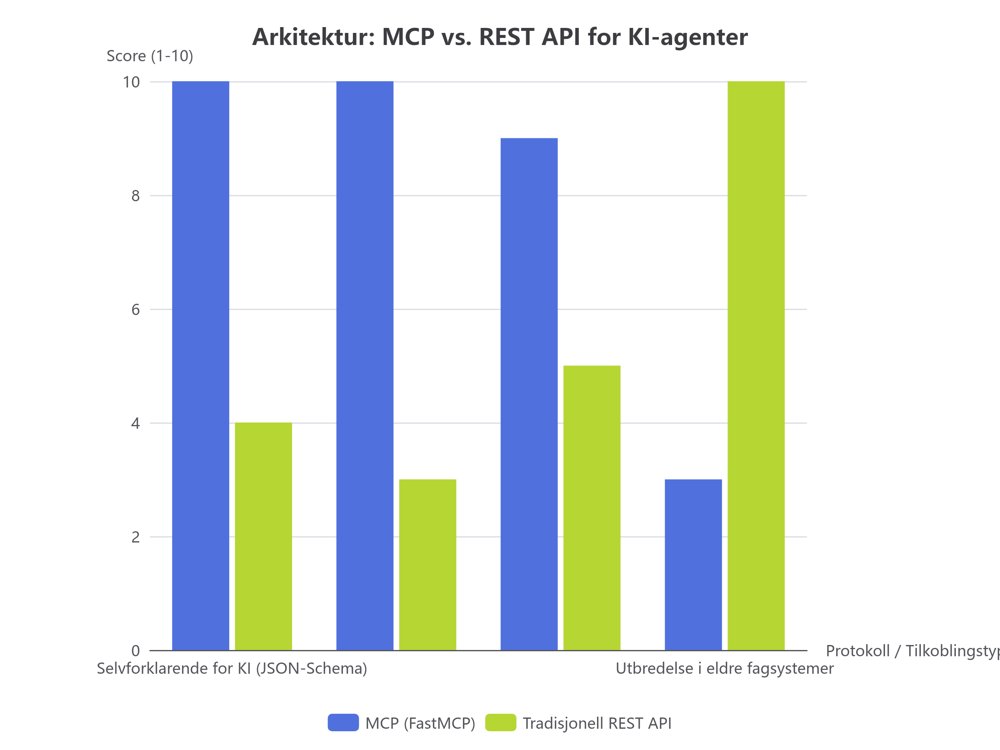

Leksjon 0002 • Kunstpixel & KI i drift
MCP vs. API: Hvordan KI kobles til interne fagsystemer
Et av de vanligste spørsmålene fra ledere og utviklere er:
"Vi har jo allerede REST API-er. Hvorfor trenger vi MCP (Model Context Protocol)?"
I Kunstpixel har vi faktisk begge deler bygget opp side om side:
- Ett lokalt REST API på port
8765 (i src/hr_api.py).
- To FastMCP-servere som kjører over stdio (
src/mcp_server.py og src/hr_mcp_server.py).
Kjernen i hva du lærer bort:
"Et API er bygget for at en menneskelig programmerer skal skrive kode mot det. En MCP-server er bygget for at en KI-agent skal oppdage, forstå og kalle verktøy helt autonomt uten manuell koding."
1. Visuell sammenligning: Hvorfor MCP revolusjonerer KI-drift

Figur 1: Egenskaper vurdert for KI-agenter i operativ drift (MCP vs. REST API).
2. Hva er forskjellen under panseret?
Tradisjonell REST API (f.eks. `src/hr_api.py`)
URL-basert over HTTP
GET /api/v1/hr/candidates?date=2026-11-07&need=5
Host: 127.0.0.1:8765
- Ulempe for KI: Modellen må vite URL-strukturen, query-parametere, HTTP-metoder (GET/POST) og feilkoder.
- Passer best for: Web-grensesnitt, apper, dashboards og maskin-til-maskin-integrasjon mellom tradisjonelle systemer.
Model Context Protocol (FastMCP)
Protokoll for direkte KI-verktøykall
@mcp.tool()
def search_collection(room_id: str, limit: int = 10):
"""Søk i samlingen filtrert på sal."""
...
- Styrke for KI: Protokollen oversetter Python-docstrings og type hints automatisk til et JSON Schema som modellen forstår direkte.
- Passer best for: KI-assistenter, Codex, Claude Code, museumsverter og agenter som må handle i sanntid.
3. Kode-eksempel fra Kunstpixel: Hvordan FastMCP beskytter databasen
Se hvordan verktøyet er definert i src/kunstpixel/core/mcp_server.py:
@mcp.tool()
def get_artwork_details(artwork_id: str) -> dict[str, Any]:
"""Hent komplette og autoritative metadata for et spesifikt kunstverk.
Args:
artwork_id: Unikt inventarnummer (f.eks. 'AURA-2026-009') eller tittel.
"""
return query_artwork_details(artwork_id)
Hva skjer bak kulissene her?
- Ingen SQL-injeksjon: Modellen kan aldri sende rå SQL som
DROP TABLE verk;. Den kan bare sende en streng for artwork_id.
- Skrivebeskyttelse (`mode=ro`): Databasen åpnes alltid read-only. Selv om verktøykoden hadde hatt en feil, blokkerer SQLite-motoren all modifikasjon.
- Type-sikkerhet: Hvis modellen prøver å sende ugyldig input, avviser FastMCP kallet umiddelbart med en strukturert feilmelding.
4. Test din forståelse (Aktiv gjenhenting)
Spørsmål: Hvorfor bør ikke en KI-agent kobles direkte til en database via rå SQL-spørringer i produksjon?
A: Fordi språkmodeller ikke forstår SQL-syntaks og derfor aldri klarer å skrive gyldige spørringer.
B: Fordi rå SQL gir risiko for datakorrupsjon, SQL-injeksjon og manglende sporbarhet. Ved å pakke oppslag inn i MCP-verktøy sikrer vi forhåndsgodkjente spørringer, typesjekk og read-only tilgang.
C: Fordi MCP er raskere enn SQL over nettverket.
Navigasjon: ← Gå til Leksjon 1 (SQLite vs RAG) |
Primærkilde: src/kunstpixel/core/mcp_server.py og src/kunstpixel/core/hrdemo_api.py.
Still gjerne oppfølgingsspørsmål direkte til agenten i chatten!